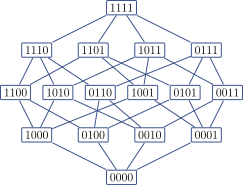
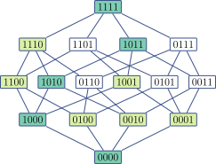

library("mlr3verse")
filter = flt("information_gain")6 Feature Selection
Marvin N. Wright
Leibniz Institute for Prevention Research and Epidemiology – BIPS, and University of Bremen, and University of Copenhagen
Feature selection, also known as variable or descriptor selection, is the process of finding a subset of features to use with a given task and learner. Using an optimal set of features can have several benefits:
- improved predictive performance, since we reduce overfitting on irrelevant features,
- robust models that do not rely on noisy features,
- simpler models that are easier to interpret,
- faster model fitting, e.g. for model updates,
- faster prediction, and
- no need to collect potentially expensive features.
However, these objectives will not necessarily be optimized by the same optimal set of features and thus feature selection can be seen as a multi-objective optimization problem. In this chapter, we mostly focus on feature selection as a means of improving predictive performance, but also briefly cover optimization of multiple criteria (sec-multicrit-featsel).
Reducing the amount of features can improve models across many scenarios, but it can be especially helpful in datasets that have a high number of features in comparison to the number of datapoints. Many learners perform implicit, also called embedded, feature selection, e.g. via the choice of variables used for splitting in a decision tree. Most other feature selection methods are model agnostic, i.e. they can be used together with any learner. Of the many different approaches to identifying relevant features, we will focus on two general concepts, which are described in detail below: Filter and Wrapper methods (Guyon and Elisseeff 2003; Chandrashekar and Sahin 2014).
For this chapter, the reader should know the basic concepts of mlr3 (sec-basics), i.e. know about tasks (sec-tasks) and learners (sec-learners). Basics about performance evaluation (sec-performance), i.e. resampling (sec-resampling) and benchmarking (sec-benchmarking) are helpful but not strictly necessary.
6.1 Filters
Filter methods are preprocessing steps that can be applied before training a model. A very simple filter approach could look like this:
- calculate the correlation coefficient \(\rho\) between each feature and a numeric target variable, and
- select all features with \(\rho > 0.2\) for further modeling steps.
This approach is a univariate filter because it only considers the univariate relationship between each feature and the target variable. Further, it can only be applied to regression tasks with continuous features and the threshold of \(\rho > 0.2\) is quite arbitrary. Thus, more advanced filter methods, e.g. multivariate filters based on feature importance, usually perform better (Bommert et al. 2020). On the other hand, a benefit of univariate filters is that they are usually computationally cheaper than more complex filter or wrapper methods. In the following, it is described how to calculate univariate, multivariate and feature importance filters, how to access implicitly selected features, how to integrate filters in a machine learning pipeline and how to optimize filter thresholds.
Filter algorithms select features by assigning numeric scores to each feature, e.g. correlation between feature and target variables, use these to rank the features and select a feature subset based on the ranking. Features that are assigned lower scores can then be omitted in subsequent modeling steps. All filters are implemented via the package mlr3filters. Below, we cover how to
- instantiate a
Filterobject, - calculate scores for a given task, and
- use calculated scores to select or drop features.
Special cases of filters are feature importance filters (sec-fs-var-imp-filters) and embedded methods (sec-fs-embedded-methods). Feature importance filters select features that are important according to the model induced by a selected Learner. They rely on the learner to extract information on feature importance from a trained model, for example, by inspecting a learned decision tree and returning the features that are used as split variables, or by computing model-agnostic feature importance (sec-interpretation) values for each feature. Embedded methods use the feature selection that is implicitly done by some learners and directly retrieve the internally selected features from the learner.
Tip
The learner used in a feature importance or embedded filter is independent of learners used in subsequent modeling steps. For example, one might use feature importance of a random forest for feature selection and train a neural network on the reduced feature set.
Many filter methods are implemented in mlr3filters, for example:
- Correlation, calculating Pearson or Spearman correlation between numeric features and numeric targets (
FilterCorrelation) - Information gain, i.e. mutual information of the feature and the target or the reduction of uncertainty of the target due to a feature (
FilterInformationGain) - Minimal joint mutual information maximization, minimizing the joint information between selected features to avoid redundancy (
FilterJMIM) - Permutation score, which calculates permutation feature importance (see sec-interpretation) with a given learner for each feature (
FilterPermutation) - Area under the ROC curve calculated for each feature separately (
FilterAUC)
Most of the filter methods have some limitations, e.g. the correlation filter can only be calculated for regression tasks with numeric features. For a full list of all implemented filter methods we refer the reader to the mlr3filters website1, which also shows the supported task and features types. A benchmark of filter methods was performed by Bommert et al. (2020), who recommend to not rely on a single filter method but try several ones if the available computational resources allow. If only a single filter method is to be used, the authors recommend to use a feature importance filter using random forest permutation importance (see sec-fs-var-imp-filters), similar to the permutation method described above, but also the JMIM and AUC filters performed well in their comparison.
6.1.1 Calculating Filter Values
The first step is to create a new R object using the class of the desired filter method. Similar to other instances in mlr3, these are registered in a dictionary (mlr_filters) with an associated shortcut function flt(). Each object of class Filter has a $calculate() method which computes the filter values and ranks them in a descending order. For example, we can use the information gain filter described above:
Such a Filter object can now be used to calculate the filter on the penguins data and get the results:
task = tsk("penguins")
filter$calculate(task)
as.data.table(filter) feature score
1: flipper_length 0.581168
2: bill_length 0.544897
3: bill_depth 0.538719
4: island 0.520157
5: body_mass 0.442880
6: sex 0.007244
7: year 0.000000Some filters have hyperparameters, which can be changed similar to setting hyperparameters of a Learner using $param_set$values. For example, to calculate "spearman" instead of "pearson" correlation with the correlation filter:
filter_cor = flt("correlation")
filter_cor$param_set$values = list(method = "spearman")
filter_cor$param_set<ParamSet>
id class lower upper nlevels default value
1: use ParamFct NA NA 5 everything
2: method ParamFct NA NA 3 pearson spearmanAs noted above, the correlation filter can only be calculated for regression tasks with numeric features and can thus not be used with the penguins data.
6.1.2 Feature Importance Filters
To use feature importance filters, we can use a learner with integrated feature importance methods. All learners with the property “importance” have this functionality. A list of all learners with this property can be found with
as.data.table(mlr_learners)[sapply(properties, function(x) "importance" %in% x)] key label
1: classif.featureless Featureless Classification Learner
2: classif.gbm Gradient Boosting
3: classif.imbalanced_rfsrc Imbalanced Random Forest
4: classif.lightgbm Gradient Boosting
5: classif.randomForest Random Forest
---
20: surv.gbm Gradient Boosting
21: surv.mboost Boosted Generalized Additive Model
22: surv.ranger Random Forest
23: surv.rfsrc Random Forest
24: surv.xgboost Gradient Boosting
5 variables not shown: [task_type, feature_types, packages, properties, predict_types]or on the mlr3 website2.
For some learners, the desired filter method needs to be set during learner creation. For example, learner classif.ranger comes with multiple integrated methods, c.f. the help page of ranger::ranger(). To use the feature importance method “impurity”, select it during learner construction:
lrn = lrn("classif.ranger", importance = "impurity")We first have to remove missing data because the learner cannot handle missing data, i.e. it does not have the property “missing”:
task = tsk("penguins")
task$filter(which(complete.cases(task$data())))Now we can use the FilterImportance filter class:
filter = flt("importance", learner = lrn)
filter$calculate(task)
as.data.table(filter) feature score
1: bill_length 76.375
2: flipper_length 45.349
3: bill_depth 36.306
4: body_mass 26.458
5: island 24.078
6: sex 1.597
7: year 1.2166.1.3 Embedded Methods
Many learners internally select a subset of the features which they find helpful for prediction, but ignore other features. For example, a decision tree might never select some features for splitting. These subsets can be used for feature selection, which we call embedded methods because the feature selection is embedded in the learner. The selected features (and those not selected) can be queried if the learner has the "selected_features" property. As above, we can find those learners with
as.data.table(mlr_learners)[sapply(properties, function(x) "selected_features" %in% x)] key label
1: classif.abess Fast Best Subset Selection for Classification
2: classif.cv_glmnet <NA>
3: classif.featureless Featureless Classification Learner
4: classif.priority_lasso Priority Lasso
5: classif.rpart Classification Tree
---
12: surv.gamboost Boosted Generalized Additive Model
13: surv.glmnet Regularized Generalized Linear Model
14: surv.mboost Boosted Generalized Additive Model
15: surv.priority_lasso Priority Lasso
16: surv.rpart Survival Tree
5 variables not shown: [task_type, feature_types, packages, properties, predict_types]or on the mlr3 website3. For example, we can use the classif.rpart learner.
task = tsk("penguins")
learner = lrn("classif.rpart")
learner$train(task)
learner$selected_features()[1] "flipper_length" "bill_length" "island" The features selected by the model can be extracted by a Filter object, where $calculate() corresponds to training the learner on the given task:
filter = flt("selected_features", learner = learner)
filter$calculate(task)
as.data.table(filter) feature score
1: island 1
2: flipper_length 1
3: bill_length 1
4: bill_depth 0
5: sex 0
6: year 0
7: body_mass 0Contrary to other filter methods, embedded methods just return value of 1 (selected features) and 0 (dropped feature).
6.1.4 Filter-based Feature Selection
After calculating a score for each feature, one has to select the features to be kept or those to be dropped from further modeling steps. For the "selected_features" filter described in embedded methods (sec-fs-embedded-methods), this step is straight-forward since the methods assigns either a value of 1 for a feature to be kept or 0 for a feature to be dropped. Below, we find the names of features with a value of 1 and select those feature with task$select():
task = tsk("penguins")
learner = lrn("classif.rpart")
filter = flt("selected_features", learner = learner)
filter$calculate(task)
# select all features used by rpart
keep = names(which(filter$scores == 1))
task$select(keep)
task$feature_names[1] "bill_length" "flipper_length" "island"
Tip
To select features, we use the function task$select() and not task$filter(), which is used to filter rows (not columns) of the data matrix, see task mutators (sec-tasks-mutators).
For filter methods which assign continuous scores, there are essentially two ways to select features:
- select the top \(k\) features, or
- select all features with a score above a threshold \(\tau\),
where the first option is equivalent to dropping the bottom \(p-k\) features. For both options, one has to decide on a threshold, which is often quite arbitrary. For example, to implement the first option with the information gain filter:
task = tsk("penguins")
filter = flt("information_gain")
filter$calculate(task)
# select top 3 features from information gain filter
keep = names(head(filter$scores, 3))
task$select(keep)
task$feature_names[1] "bill_depth" "bill_length" "flipper_length"Or, the second option with \(\tau = 0.5\):
task = tsk("penguins")
filter = flt("information_gain")
filter$calculate(task)
# select all features with score >0.5 from information gain filter
keep = names(which(filter$scores > 0.5))
task$select(keep)
task$feature_names[1] "bill_depth" "bill_length" "flipper_length" "island" Filters can be integrated into pipelines. Pipelines define machine learning workflows in graphs and by that greatly simplify the combination of different steps such as preprocessing operations, resampling or ensemble learning. While pipelines are described in detail in sec-pipelines, here is a brief preview where filter-based feature selection is combined with a learner:
library(mlr3pipelines)
task = tsk("penguins")
# combine filter (keep top 3 features) with learner
graph = po("filter", filter = flt("information_gain"), filter.nfeat = 3) %>>%
po("learner", lrn("classif.rpart"))
# now it can be used as any learner, but it includes the feature selection
learner = as_learner(graph)
learner$train(task)Pipelines can also be used to apply HPO (sec-optimization) to the filter, i.e. tune the filter threshold to optimize the feature selection regarding prediction performance, and to embed this in resampling. We first combine a filter with a learner,
and tune how many feature to include
library("mlr3tuning")
ps = ps(information_gain.filter.nfeat = p_int(lower = 1, upper = 7))
instance = TuningInstanceSingleCrit$new(
task = task,
learner = learner,
resampling = rsmp("holdout"),
measure = msr("classif.acc"),
search_space = ps,
terminator = trm("none")
)
tuner = tnr("grid_search")
tuner$optimize(instance) information_gain.filter.nfeat learner_param_vals x_domain
1: 5 <list[2]> <list[1]>
1 variable not shown: [classif.acc]The output above shows only the best result. To show the results of all tuning steps, retrieve them from the archive of the tuning instance:
as.data.table(instance$archive) information_gain.filter.nfeat classif.acc
1: 2 0.9304
2: 5 0.9391
3: 1 0.7478
4: 7 0.9391
5: 3 0.9391
6: 6 0.9391
7: 4 0.9391
7 variables not shown: [x_domain_information_gain.filter.nfeat, runtime_learners, timestamp, batch_nr, warnings, errors, resample_result]We can also plot the tuning results:
autoplot(instance)
For more details, see Pipelines (sec-pipelines) and Hyperparameter Optimization (sec-optimization).
6.2 Wrapper Methods
Wrapper methods work by fitting models on selected feature subsets and evaluating their performance (Kohavi and John 1997). This can be done in a sequential fashion, e.g. by iteratively adding features to the model in sequential forward selection, or in a parallel fashion, e.g. by evaluating random feature subsets in a random search. Below, the use of these simple approaches is described in a common framework along with more advanced methods such as genetic search. It is further shown how to select features by optimizing multiple performance measures and how to wrap a learner with feature selection to use it in pipelines or benchmarks.
Tip
In contrast to filters (sec-fs-filter), the learner used in the wrapper feature selection is not independent of learners used in subsequent modeling steps. The idea of wrapper methods is to directly include, i.e. wrap, the feature selection with the learner to optimize its performance.
In more detail, wrapper methods iteratively select features that optimize a performance measure. Instead of ranking features, a model is fit on a selected subset of features in each iteration and evaluated in resampling with respect to a selected performance measure. The strategy that determines which feature subset is used in each iteration is given by the FSelector object. A simple example is the sequential forward selection that starts with computing each single-feature model, selects the best one, and then iteratively adds the feature that leads to the largest performance improvement (Figure fig-sequential-forward-selection).


Wrapper methods can be used with any learner but need to train the learner potentially many times, leading to a computationally intensive method. All wrapper methods are implemented via the package mlr3fselect. In this chapter, we cover how to
- instantiate an
FSelectorobject, - configure it, to e.g. respect a runtime limit or for different objectives,
- run it or fuse it with a
Learnervia anAutoFSelector.
Tip
Wrapper-based feature selection is very similar to HPO (sec-optimization). The major difference is that we search for well-performing feature subsets instead of hyperparameter configurations. We will see below, that we can even use the same terminators, that some feature selection algorithms are similar to tuners and that we can also optimize multiple performance measures with feature selection.
6.2.1 Simple Forward Selection Example
We start with the simple example from above and do sequential forward selection with the penguins data:
library("mlr3fselect")
# subset features to ease visualization
task = tsk("penguins")
task$select(c("bill_depth", "bill_length", "body_mass", "flipper_length"))
instance = fselect(
fselector = fs("sequential"),
task = task,
learner = lrn("classif.rpart"),
resampling = rsmp("holdout"),
measure = msr("classif.acc")
)In contrast to HPO (sec-optimization), fselect directly starts the optimization and selects features. To show all analyzed feature subsets and the corresponding performance, we use as.data.table(instance$archive). In this example, the batch_nr column represents the iteration of the sequential forward selection and we start by looking at the first iteration.
dt = as.data.table(instance$archive)
dt[batch_nr == 1, 1:5] bill_depth bill_length body_mass flipper_length classif.acc
1: TRUE FALSE FALSE FALSE 0.6957
2: FALSE TRUE FALSE FALSE 0.7652
3: FALSE FALSE TRUE FALSE 0.7043
4: FALSE FALSE FALSE TRUE 0.7913We see that the feature flipper_length achieved the highest prediction performance in the first iteration and is thus selected. We plot the performance over the iterations:
autoplot(instance, type = "performance")
In the plot, we can see that adding a second feature further improves the performance to over 90%. To see which feature was added, we can go back to the archive and look at the second iteration:
dt[batch_nr == 2, 1:5] bill_depth bill_length body_mass flipper_length classif.acc
1: TRUE FALSE FALSE TRUE 0.7652
2: FALSE TRUE FALSE TRUE 0.9391
3: FALSE FALSE TRUE TRUE 0.8174The third iteration confirms our conclusion from the plot, that adding a third feature does not improve performance:
dt[batch_nr == 3, 1:5] bill_depth bill_length body_mass flipper_length classif.acc
1: TRUE TRUE FALSE TRUE 0.9391
2: FALSE TRUE TRUE TRUE 0.9391To directly show the best feature set, we can use:
instance$result_feature_set[1] "bill_length" "flipper_length"
Tip
instance$result_feature_set shows features in alphabetical order and not in the order selected.
Internally, the fselect function creates an FSelectInstanceSingleCrit object and executes the feature selection with an FSelector object, based on the selected method, in this example an FSelectorSequential object. It uses the supplied resampling and measure to evaluate all feature subsets provided by the FSelector on the task.
At the heart of mlr3fselect are the R6 classes:
-
FSelectInstanceSingleCrit,FSelectInstanceMultiCrit: These two classes describe the feature selection problem and store the results. -
FSelector: This class is the base class for implementations of feature selection algorithms.
In the following two sections, these classes will be created manually, to learn more about the mlr3fselect package.
6.2.2 The FSelectInstance Classes
To create an FSelectInstanceSingleCrit object, we use the sugar function fsi, which is short for FSelectInstanceSingleCrit$new() or FSelectInstanceMultiCrit$new(), depending on the selected measure(s):
Note that we have not selected a feature selection algorithm and thus did not select any features, yet. We have also supplied a Terminator, which is used to stop the feature selection. For the forward selection in the example above, we did not need a terminator because we simply tried all remaining features until the full model (technically using TerminatorNone). However, we could still use a terminator to stop the forward selection early. For other feature selection algorithms such as random search, a terminator is required. The following terminator are available:
- Terminate after a given time (
TerminatorClockTime) - Terminate after a given amount of iterations (
TerminatorEvals) - Terminate after a specific performance is reached (
TerminatorPerfReached) - Terminate when feature selection does not improve (
TerminatorStagnation) - A combination of the above in an ALL or ANY fashion (
TerminatorCombo)
See also the description of terminators in HPO (sec-terminator). Above we used the sugar function trm to select TerminatorEvals with 20 evaluations.
To start the feature selection, we still need to select an algorithm which are defined via the FSelector class, described in the next section.
6.2.3 The FSelector Class
The FSelector class is the base class for different feature selection algorithms. The following algorithms are currently implemented in mlr3fselect:
- Random search, trying random feature subsets until termination (
FSelectorRandomSearch) - Exhaustive search, trying all possible feature subsets (
FSelectorExhaustiveSearch) - Sequential search, i.e. sequential forward or backward selection (
FSelectorSequential) - Recursive feature elimination, which uses learner’s importance scores to iteratively remove features with low feature importance (
FSelectorRFE) - Design points, trying all user-supplied feature sets (
FSelectorDesignPoints) - Genetic search, implementing a genetic algorithm which treats the features as a binary sequence and tries to find the best subset with mutations (
FSelectorGeneticSearch) - Shadow variable search, which adds permuted copies of all features (shadow variables) and stops when a shadow variable is selected (
FSelectorShadowVariableSearch)
Note that all these methods can be stopped (early) with a terminator, e.g. an exhaustive search can be stopped after a given number of evaluations. More details on these algorithms can be found in the respective R help pages and on the mlr3fselect website4. In this example, we will use a simple random search and retrieve it from the dictionary mlr_fselectors with the fs() sugar function, which is short for FSelectorRandomSearch$new():
fselector = fs("random_search")6.2.4 Starting the Feature Selection
To start the feature selection, we pass the FSelectInstanceSingleCrit object to the $optimize() method of the initialized FSelector object:
fselector$optimize(instance)The algorithm proceeds as follows
- The
FSelectorproposes at least one feature subset and may propose multiple subsets to improve parallelization, which can be controlled via the settingbatch_size. - For each feature subset, the given learner is fitted on the task using the provided resampling and evaluated with the given measure.
- All evaluations are stored in the archive of the
FSelectInstanceSingleCritobject. - The terminator is queried if the budget is exhausted. If the budget is not exhausted, restart with 1) until it is.
- Determine the feature subset with the best observed performance.
- Store the best feature subset as the result in the instance object.
The best feature subset and the corresponding measured performance can be accessed from the instance:
as.data.table(instance$result)[, .(features, classif.acc)] features classif.acc
1: bill_depth,bill_length,body_mass,flipper_length 0.9391As in the forward selection example above, one can investigate all resamplings which were undertaken, as they are stored in the archive of the FSelectInstanceSingleCrit object and can be accessed by using as.data.table():
as.data.table(instance$archive)[, .(bill_depth, bill_length, body_mass, flipper_length, classif.acc)] bill_depth bill_length body_mass flipper_length classif.acc
1: TRUE TRUE TRUE FALSE 0.9043
2: TRUE TRUE TRUE FALSE 0.9043
3: TRUE FALSE TRUE FALSE 0.7043
4: TRUE TRUE TRUE TRUE 0.9391
5: TRUE FALSE TRUE TRUE 0.7565
---
16: FALSE FALSE TRUE FALSE 0.6870
17: TRUE FALSE TRUE TRUE 0.7565
18: TRUE TRUE FALSE TRUE 0.9391
19: TRUE FALSE FALSE FALSE 0.7565
20: FALSE TRUE FALSE FALSE 0.7478Now the optimized feature subset can be used to subset the task and fit the model on all observations:
The trained model can now be used to make a prediction on external data.
Warning
Predicting on observations present in the data used for feature selection should be avoided. The model has seen these observations already during feature selection and therefore performance evaluation results would be over-optimistic. Instead, to get unbiased performance estimates for the current task, nested resampling (see sec-autofselect and sec-nested-resampling) is required.
6.2.5 Optimizing Multiple Performance Measures
You might want to use multiple criteria to evaluate the performance of the feature subsets. For example, you might want to select the subset with the highest classification accuracy and lowest time to train the model. However, these two subsets will generally not coincide, i.e. the subset with highest classification accuracy will probably be another subset than that with lowest training time. With mlr3fselect, the result is the pareto-optimal solution, i.e. the best feature subset for each of the criteria that is not dominated by another subset. For the example with classification accuracy and training time, a feature subset that is best in accuracy and training time will dominate all other subsets and thus will be the only pareto-optimal solution. If, however, different subsets are best in the two criteria, both subsets are pareto-optimal. Again, we point out the similarity with HPO and refer to multi-objective hyperparameter optimization (see sec-multi-metrics-tuning and Karl et al. (2022)).
In the following example, we will perform feature selection on the sonar dataset. This time, we will use FSelectInstanceMultiCrit to select a subset of features that has high sensitivity, i.e. TPR, and high specificity, i.e. TNR. The feature selection process with multiple criteria is similar to that with a single criterion, except that we select two measures to be optimized:
The function fsi creates an instance of FSelectInstanceMultiCrit if more than one measure is selected. We now create an FSelector and call the $optimize() function of the FSelector with the FSelectInstanceMultiCrit object, to search for the subset of features with the best TPR and FPR. Note that these two measures cannot both be optimal at the same time (except for the perfect classifier) and we expect several pareto-optimal solutions.
fselector = fs("random_search")
fselector$optimize(instance)As above, the best feature subsets and the corresponding measured performance can be accessed from the instance.
as.data.table(instance$result)[, .(features, classif.tpr, classif.tnr)] features classif.tpr classif.tnr
1: V1,V11,V13,V15,V16,V18,... 0.725 0.7931
2: V1,V10,V12,V13,V14,V15,... 0.725 0.7931
3: V12,V13,V14,V16,V17,V19,... 0.850 0.4483
4: V1,V10,V11,V13,V14,V15,... 0.725 0.7931
5: V12,V15,V20,V24,V26,V32,... 0.800 0.7586We see different tradeoffs of sensitivity and specificity but no feature subset is dominated by another, i.e. has worse sensitivity and specificity than any other subset.
6.2.6 Automating the Feature Selection and Nested Resampling
The AutoFSelector class wraps a learner and augments it with an automatic feature selection for a given task. Because the AutoFSelector itself inherits from the Learner base class, it can be used like any other learner. Below, a new learner is created. This learner is then wrapped in a random search feature selector, which automatically starts a feature selection on the given task using an inner resampling, as soon as the wrapped learner is trained. Here, the function auto_fselector creates an instance of AutoFSelector, i.e. it is short for AutoFSelector$new().
at = auto_fselector(
fselector = fs("random_search"),
learner = lrn("classif.log_reg"),
resampling = rsmp("holdout"),
measure = msr("classif.acc"),
terminator = trm("evals", n_evals = 10)
)
at<AutoFSelector:classif.log_reg.fselector>
* Model: list
* Packages: mlr3, mlr3fselect, mlr3learners, stats
* Predict Type: response
* Feature Types: logical, integer, numeric, character, factor,
ordered
* Properties: loglik, twoclassWe can now, as with any other learner, call the $train() and $predict() method. This time however, we pass it to benchmark() to compare the optimized feature subset to the complete feature set. This way, the AutoFSelector will do its resampling for feature selection on the training set of the respective split of the outer resampling. The learner then undertakes predictions using the test set of the outer resampling. Here, the outer resampling refers to the resampling specified in benchmark(), whereas the inner resampling is that specified in auto_fselector(). This is called nested resampling (see sec-nested-resampling) and yields unbiased performance measures, as the observations in the test set have not been used during feature selection or fitting of the respective learner.
In the call to benchmark(), we compare our wrapped learner at with a normal logistic regression lrn("classif.log_reg"). For that, we create a benchmark grid with the task, the learners and a 3-fold cross validation on the sonar data.
Now, we compare those two learners regarding classification accuracy and training time:
aggr = bmr$aggregate(msrs(c("classif.acc", "time_train")))
as.data.table(aggr)[, .(learner_id, classif.acc, time_train)] learner_id classif.acc time_train
1: classif.log_reg.fselector 0.7061 0.548
2: classif.log_reg 0.6776 0.020We can see that, in this example, the feature selection improves prediction performance but also drastically increases the training time, since the feature selection (including resampling and random search) is part of the model training of the wrapped learner.
Tip
For wrapper methods, we use the AutoFSelector to wrap a learner with feature selection, whereas in sec-fs-filter-based we used pipelines to combine learner and feature selection filter. The difference is that a filter is independent of the learner and can thus be calculated as a preprocessing operator before training a learner, while a wrapper is inseparable from the learner, as it needs to train the learner in each iteration with a different feature subset. Nevertheless, both approaches can be integrated into pipelines.
6.3 Conclusion
In this chapter, we learned how to perform feature selection with mlr3. We introduced filter and wrapper methods, combined feature selection with pipelines, learned how to automate the feature selection and covered the optimization of multiple performance measures. Table tbl-api-feature-selection gives an overview of the most important functions (S3) and classes (R6) used in this chapter.
| S3 function | R6 Class | Summary |
|---|---|---|
flt() |
Filter |
Selects features by calculating a score for each feature |
Filter$calculate() |
Filter |
Calculates scores on a given task |
fselect() |
FSelectInstanceSingleCrit or FSelectInstanceMultiCrit
|
Specifies a feature selection problem and stores the results |
fs() |
FSelector |
Specifies a feature selection algorithm |
FSelector$optimize() |
FSelector |
Executes the features selection specified by the FSelectInstance with the algorithm specified by the FSelector
|
auto_fselector() |
AutoFSelector |
Defines a learner that includes feature selection |
Resources
- A list of implemented filters in the
mlr3filterspackage is provided on the mlr3filters website5. - A summary of wrapper-based feature selection with the
mlr3fselectpackage is provided in the mlr3fselect cheatsheet6. - An overview of feature selection methods is provided by Chandrashekar and Sahin (2014).
- A more formal and detailed introduction to filters and wrappers is given in Guyon and Elisseeff (2003).
- Bommert et al. (2020) perform a benchmark of filter methods.
- Filters can be used as part of a machine learning pipeline (sec-pipelines).
- Filters can be optimized with HPO (sec-optimization).
6.4 Exercises
- Calculate a correlation filter on the
Motor Trenddataset (mtcars). - Use the filter from the first exercise to select the five best features in the
mtcarsdataset. - Apply a backward selection to the
penguinsdataset with a classification tree learner"classif.rpart"and holdout resampling by the measure classification accuracy. Compare the results with those in sec-fs-wrapper-example. Answer the following questions:- Do the selected features differ?
- Which feature selection method achieves a higher classification accuracy?
- Are the accuracy values in b) directly comparable? If not, what has to be changed to make them comparable?
- Automate the feature selection as in sec-autofselect with the
sonardataset and a logistic regression learner ("classif.log_reg"). Hint: Remember to calllibrary("mlr3learners")for the logistic regression learner.
6.5 Citation
Please cite this chapter as:
Wright MN. (2024). Feature Selection. In Bischl B, Sonabend R, Kotthoff L, Lang M, (Eds.), Applied Machine Learning Using mlr3 in R. CRC Press. https://mlr3book.mlr-org.com/feature_selection.html.
Bommert, Andrea, Xudong Sun, Bernd Bischl, Jörg Rahnenführer, and Michel Lang. 2020. “Benchmark for Filter Methods for Feature Selection in High-Dimensional Classification Data.” Computational Statistics & Data Analysis 143: 106839. https://doi.org/https://doi.org/10.1016/j.csda.2019.106839.
Chandrashekar, Girish, and Ferat Sahin. 2014. “A Survey on Feature Selection Methods.” Computers and Electrical Engineering 40 (1): 16–28. https://doi.org/https://doi.org/10.1016/j.compeleceng.2013.11.024.
Guyon, Isabelle, and André Elisseeff. 2003. “An Introduction to Variable and Feature Selection.” Journal of Machine Learning Research 3 (Mar): 1157–82.
Karl, Florian, Tobias Pielok, Julia Moosbauer, Florian Pfisterer, Stefan Coors, Martin Binder, Lennart Schneider, et al. 2022. “Multi-Objective Hyperparameter Optimization–an Overview.” arXiv Preprint arXiv:2206.07438.
Kohavi, Ron, and George H. John. 1997. “Wrappers for Feature Subset Selection.” Artificial Intelligence 97 (1): 273–324. https://doi.org/https://doi.org/10.1016/S0004-3702(97)00043-X.